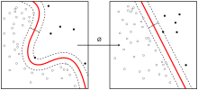

Feature engineering
| Machine learning and data mining |
|---|
|  |
{kind=link}
Feature engineering is the process of using domain knowledge of the data to create features that make machine learning algorithms work. Feature engineering is fundamental to the application of machine learning, and is both difficult and expensive. The need for manual feature engineering can be obviated by automated feature learning.
Feature engineering is an informal topic, but it is considered essential in applied machine learning.
Coming up with features is difficult, time-consuming, requires expert knowledge. "Applied machine learning" is basically feature engineering.
Contents
[hide]Features[edit]
A feature is an attribute or property shared by all of the independent units on which analysis or prediction is to be done. Any attribute could be a feature, as long as it is useful to the model.
The purpose of a feature, other than being an attribute, would be much easier to understand in the context of a problem. A feature is a characteristic that might help when solving the problem.[2]
Importance of features[edit]
The features in your data are important to the predictive models you use and will influence the results you are going to achieve. The quality and quantity of the features will have great influence on whether the model is good or not.[3]
You could say the better the features are, the better the result is. This isn't entirely true, because the results achieved also depend on the model and the data, not just the chosen features. That said, choosing the right features is still very important. Better features can produce simpler and more flexible models, and they often yield better results.[2]
The algorithms we used are very standard for Kagglers. […] We spent most of our efforts in feature engineering. [...] We were also very careful to discard features likely to expose us to the risk of over-fitting our model.
— Xavier Conort, "Q&A with Xavier Conort"[4]
…some machine learning projects succeed and some fail. What makes the difference? Easily the most important factor is the features used.
— Pedro Domingos, "A Few Useful Things to Know about Machine Learning"[5]
The process of feature engineering[6][edit]
- Brainstorming or Testing features;
- Deciding what features to create;
- Creating features;
- Checking how the features work with your model;
- Improving your features if needed;
- Go back to brainstorming/creating more features until the work is done.
Feature relevance[7][edit]
Depending on a feature it could be strongly relevant (has information that doesn't exist in any other feature), relevant, weakly relevant (some information that other features include) or irrelevant. It is important to create a lot of features. Even if some of them are irrelevant, you can't afford missing the rest. Afterwards, feature selection can be used in order to prevent overfitting.[8]
Feature explosion[edit]
Feature explosion can be caused by feature combination or feature templates, both leading to a quick growth in the total number of features.
- Feature templates - implementing features templates instead of coding new features
- Feature combinations - combinations that cannot be represented by the linear system
There are a few solutions to help stop feature explosion such as: regularization, kernel method, feature selection.[9]
Automated Feature Engineering[edit]
Automation of feature engineering has become an emerging topic of research in academia. In 2015, researchers at MIT presented the Deep Feature Synthesis algorithm and demonstrated its effectiveness in online data science competitions where it beat 615 of 906 human teams[10][11]. Deep Feature Synthesis is available as an open source library called Featuretools. That work was followed by other researchers including IBM's OneBM [12] and Berkeley's ExploreKit[13]. The researchers at IBM state that feature engineering automation "helps data scientists reduce data exploration time allowing them to try and error many ideas in short time. On the other hand, it enables non-experts, who are not familiar with data science, to quickly extract value from their data with a little effort, time and cost."
Commercial tools have emerged from new machine learning focused startups including H20.ai[14] and Feature Labs [15].
See also[edit]
References[edit]
- Jump up ^ "Machine Learning and AI via Brain simulations" (PDF). Stanford University. Retrieved 2017-08-03.
- ^ Jump up to: a b "Discover Feature Engineering, How to Engineer Features and How to Get Good at It - Machine Learning Mastery". Machine Learning Mastery. Retrieved 2015-11-11.
- Jump up ^ "Feature Engineering: How to transform variables and create new ones?". Analytics Vidhya. 2015-03-12. Retrieved 2015-11-12.
- Jump up ^ kaggle.com,(2015).Q&A with Xavier Conort,[Accessed at:]http://blog.kaggle.com/2013/04/10/qa-with-xavier-conort/%7Caccessdate=November 2015
- Jump up ^ Domingos, Pedro. "A Few Useful Things to Know about Machine Learning" (PDF). Retrieved 12 November 2015.
- Jump up ^ "Big Data: Week 3 Video 3 - Feature Engineering". youtube.com.
- Jump up ^ "Feature Engineering" (PDF). 2010-04-22. Retrieved 12 November 2015.
- Jump up ^ "Feature engineering and selection" (PDF). Alexandre Bouchard-Côté. Retrieved 12 November 2015.
- Jump up ^ "Feature engineering in Machine Learning" (PDF). Zdenek Zabokrtsky. Retrieved 12 November 2015.
- Jump up ^ "Automating big-data analysis".
- Jump up ^ "Deep Feature Synthesis: Towards Automating Data Science Endeavors" (PDF).
- Jump up ^ "One button machine for automating feature engineering in relational databases" (PDF).
- Jump up ^ "ExploreKit: Automatic Feature Generation and Selection" (PDF).
- Jump up ^ "H2O.AI snares $40M Series C investment led by Wells Fargo and Nvidia".
- Jump up ^ "Feature Labs launches out of MIT to accelerate the development of machine learning algorithms".